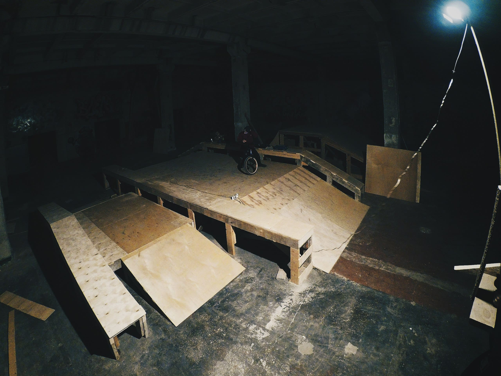
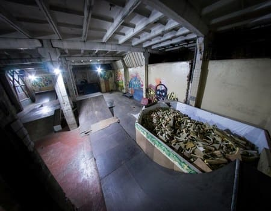
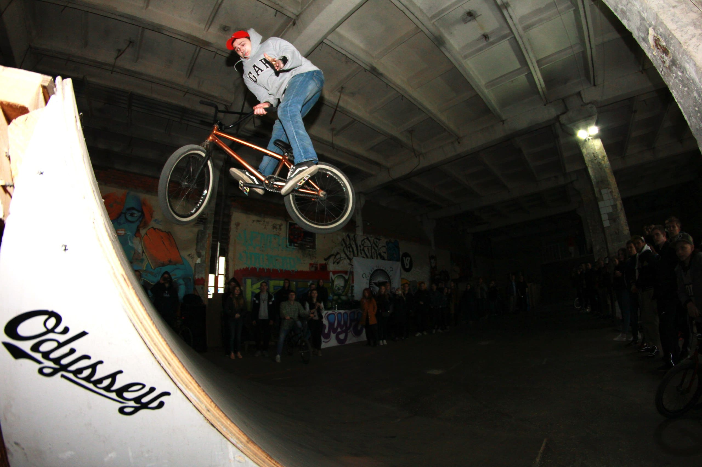

Луч-Первый и единственный крытый скейт парк в Вологде
Крытый скейт парк в городе Вологда, находящийся по адресу: ул. Ленинградская 71 ТЦ "ЛУЧ"
График работы скейт парка - плавающий, время открытия пишем на стене группы ежедневно.
Мы предлагаем:
- Парк с эйр-зоной, рампой, пирамидками, с резиновым фанбоксом и квотером.
- Bmx тренинг школа скейтпарка Луч.Тренировки в малых группах под руководством известных российских
райдеров для всех категорий: новички, любители, про.
- Индивидуальные тренировки под руководством опытных тренеров для детей от 6 лет
- Cвободное катание. В парке можно отработать новые трюки и улучшить свою технику
- Прокат шлемов и самокатов
- Место проведения соревнований, в том числе чемпионата России по самокату, и других мероприятий
- Зона отдыха для родителей
- Аренда скейтпарка. Дни рождения, cъемки и др.

Невероятно разнообразная street зона, имеющая все, что нужно для подготовки
покорения улиц

По-настоящему умный парк, в котором
просчитан каждый радиус

Огромная площадь парка, которая позволяет вместить огромное кол-во райдеров
5 посещений — 1500 Р
10 посещений — 2800 Р
15 посещений — 3750 Р
20 посещений — 4700 Р
Распространяется на дисциплины: самокат, ролики, bmx, mtb — в часы свободного
катания.
Абонемент действует 30 дней с первого посещения.
Приобрести его можно на ресепшне парка, вам выдается именная карточка с выбранным
количеством посещений.
Парк можно арендовать для катания в своей компании любой дисциплины, празднования дня
рождения, съемок видео и других ваших затей.
Часы для аренды:
Вечерняя 21:00—23:00 — 5 000 руб
Ночная 23:00—06:00 — 15 000 руб
Для бронирования парка позвоните по телефону 8 (800) 250-50-06
Найт-райды проводятся по расписанию в зимний период
23:00 – 06:00
Свободное катание для всех совершеннолетних желающих.
Несовершеннолетние пропускаются только в сопровождении взрослых.
Стоимость: 1000 руб с человека по записи
Аренда шлема: 50 Р
Парковка на территории платная: 150 Р
Пропуск на выезд у администратора скейт-парка
Первое посещение
Ознакомиться с правилами
парка
Правила
Покупка входного билета для посещения ЛУЧ парка означает, что он, до приобретения билета, ознакомился с
настоящими правилами, согласен с ними и обязуется их безусловно выполнять. Проход на территорию парка
возможен только по билету. Возврат купленных билетов не производится.
1. ЛУЧ PARK является территорией повышенной опасности. Администрация парка не несёт ответственности за
любые возможные травмы катающихся и других посетителей, независимо от причин и обстоятельств
возникновения таких травм. Просьба, использовать специальную защиту: наколенники и налокотники.
Наличие шлема – ОБЯЗАТЕЛЬНО.
2. Не достигшим совершеннолетия ( до 18 лет) – необходимо предоставить разрешение от родителей Райдеры
старше 18 лет могут посещать парк только при наличии документа, удостоверяющего личность и возраст
(ксерокопии подойдут только заверенные у нотариуса) и заявление о том, что вы информированы о правилах
посещения парка.
3. Для поддержания чистоты в парке необходима сменная обувь.
Рекомендации:
1. будьте вежливы и перед выполнением любого трюка убедитесь в отсутствии помех для его выполнения
2. не стойте между фигурами, создавая помехи другим катающимся
3. выбирайте место для передышки так, чтобы никому не мешать
4. рассчитывайте свои силы, амплитуду и сложность трюков соответственно своим возможностям
Категорически запрещается:
1. Курить в помещении парка.
2. Находиться в состоянии любого опьянения.
3. Антиобщественное поведение, в т.ч. нецензурная брань.
4. Создавать в любом виде помехи катанию. (например — располагаться на фигурах парка для отдыха).
5. Мусорить на территории парка.
6. Проносить на территорию парка любую стеклянную тару, колющие и режущие предметы, оружие любого вида,
огнеопасные и легковоспламеняющиеся вещества.
7. Наносить умышленный вред оборудованию или имуществу, расположенному на территории парка. Лицо,
причинившее вред обязано возместить его.
Администратор имеет право впоследствии запретить допуск соответствующего лица на территорию парка на
весь период его функционирования. В случае удаления посетителя с территории парка в результате нарушения
им положений настоящих правил, стоимость билета возврату не подлежит.
При возникновении любых вопросов, связанных с работой парка, или нестандартных ситуаций обратитесь к
администрации.
Расписка о том, что вы информированы о правилах
посещения парка
Для несовершеннолетних заполняется родителями
Для совершеннолетних самостоятельно: при себе документ, удостоверяющий личность и возраст
{kind=link}
{kind=link}
{kind=link}
{kind=link}
{kind=link}
{kind=link}
{kind=link}
{kind=link}
{kind=link}
{kind=link}